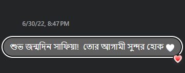
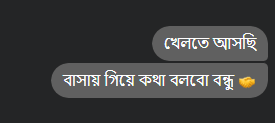
We worked together for so long but never talked—until 30th June 2022. That day, she posted "Ajk amar bday nah!!" and I, without missing a beat, wished her anyway. She called me out, and that tiny moment turned into endless conversations. Who knew a playful exchange would change everything? Life had its own plans, and I wouldn’t have it any other way.
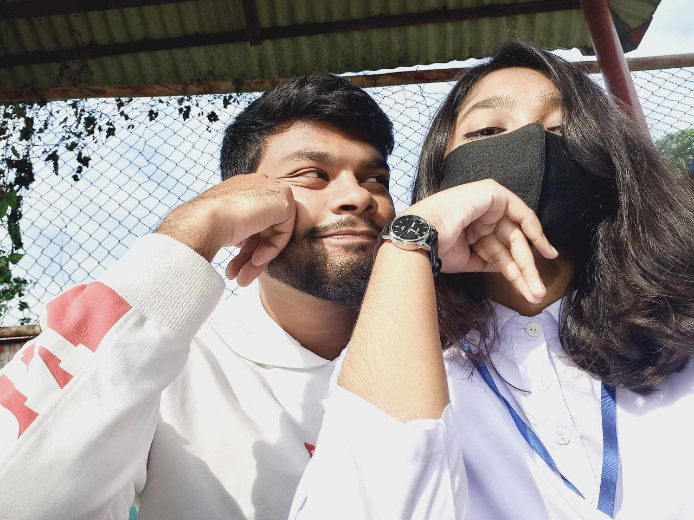
After countless calls and endless conversations, I traveled 280 km, a 15-hour journey, just to meet her. And the moment I saw her—those eyes, that hair—I kept falling in love again and again.
The butterflies were real, but so was the feeling that we had been together forever.
That day, we didn’t just meet—we found us. ❤️
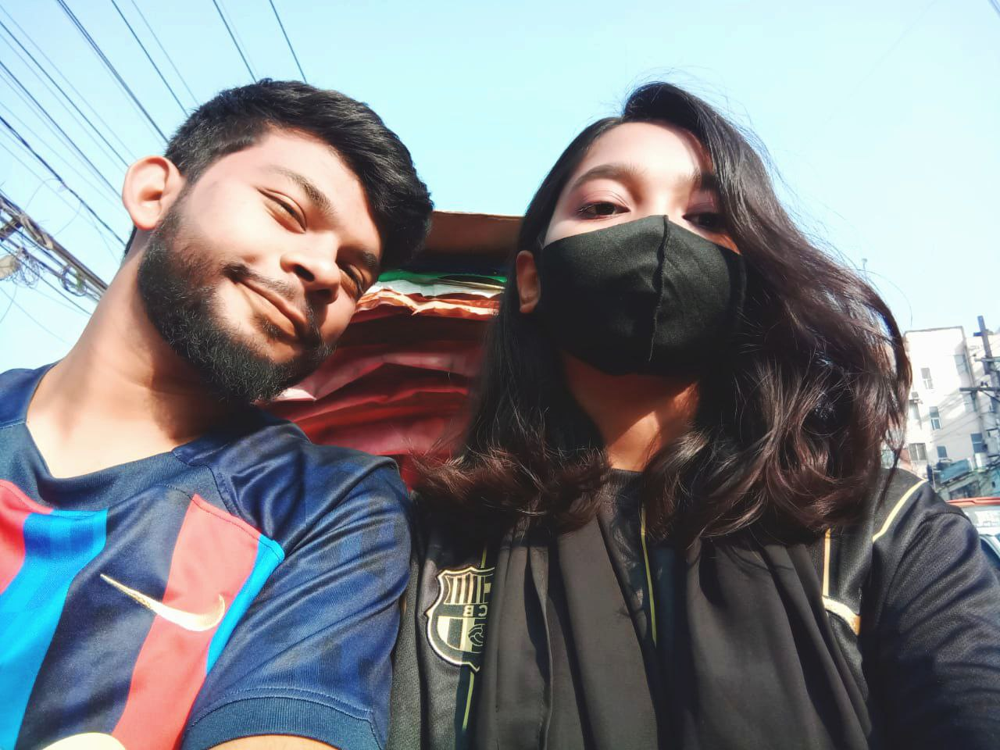
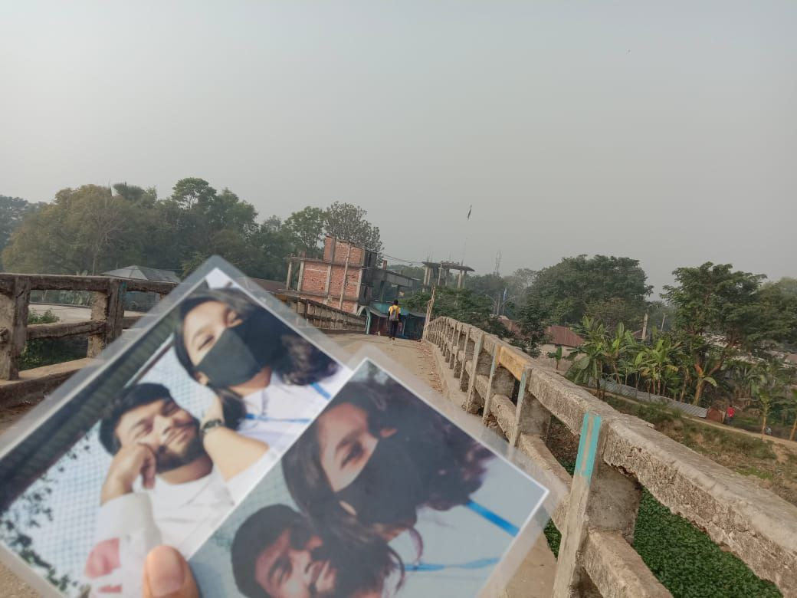
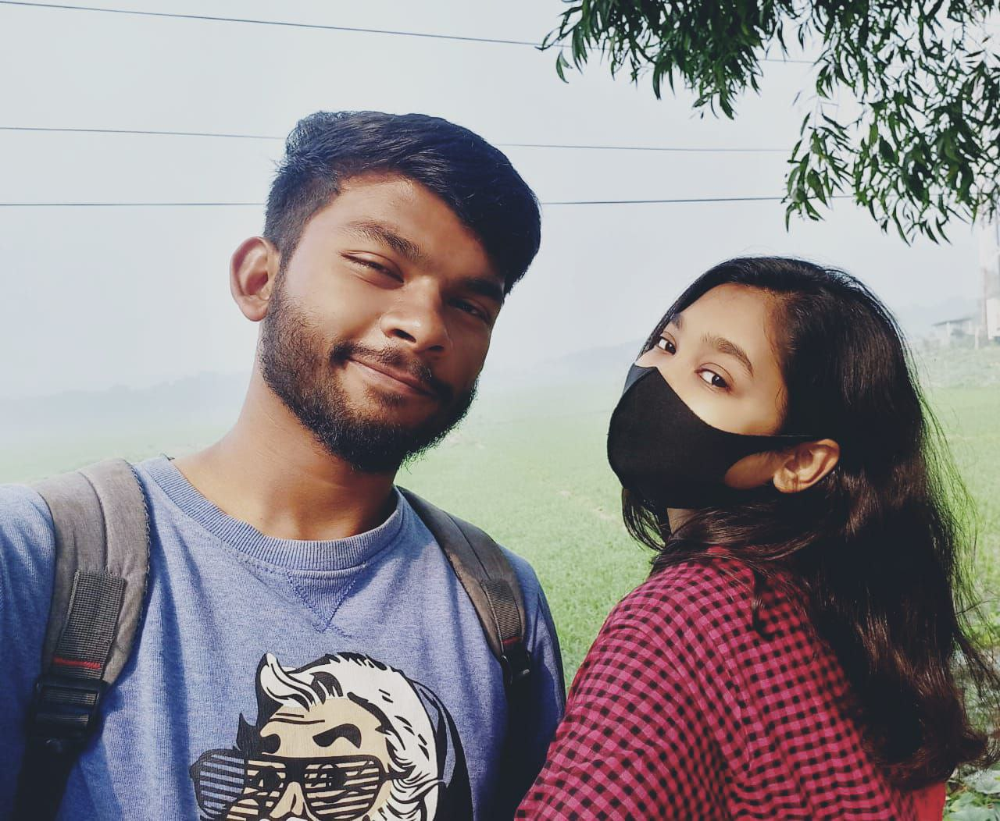
After traveling miles, through the day full of roud and the endless brishti, it doesn’t matter where we are or what we’ve been through. What matters is that we're together. No matter the distance or the challenges, it’s her beside me that makes everything worth it. Each place we visit becomes ours, marked by the journey we take together—wherever we are, we’re home.
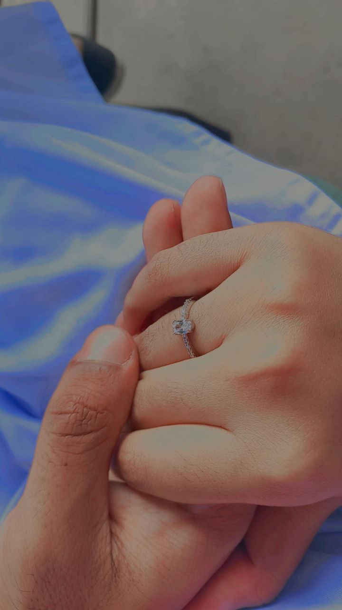
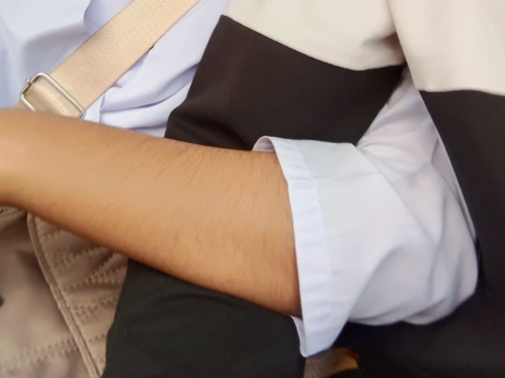
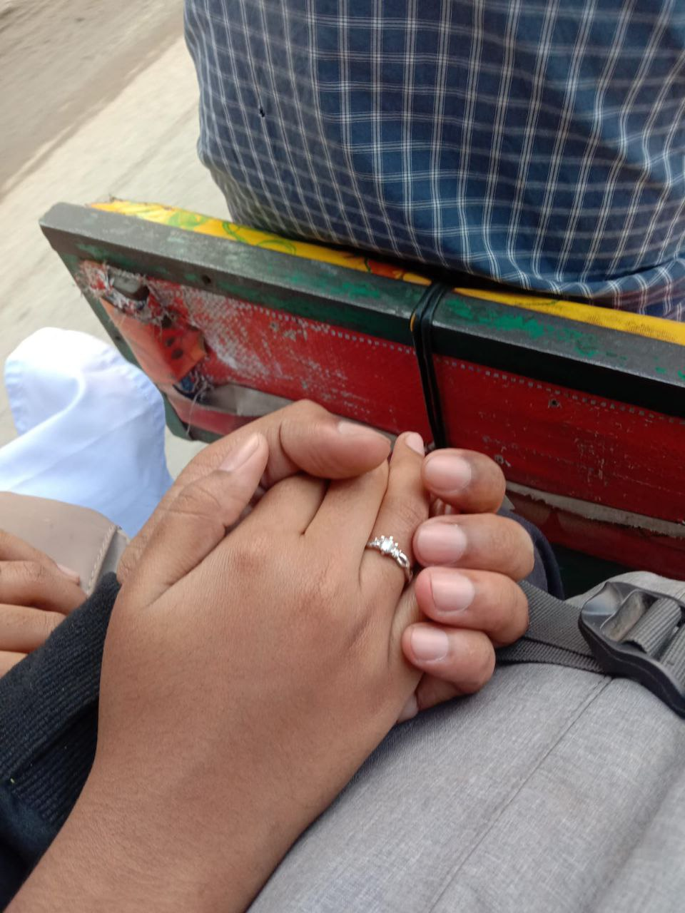
When our hands meet, it’s more than just a gesture. It’s a silent promise, a bond that makes me feel like I’m the strongest person in the world. In that moment, I know I would fight for her against anything, anyone, or everything. Holding her hand gives me the strength to face any challenge, knowing that together, we can conquer it all. It’s not just about being close—it's about protecting her, cherishing her, and showing the world that I’ll always stand by her side, no matter what.
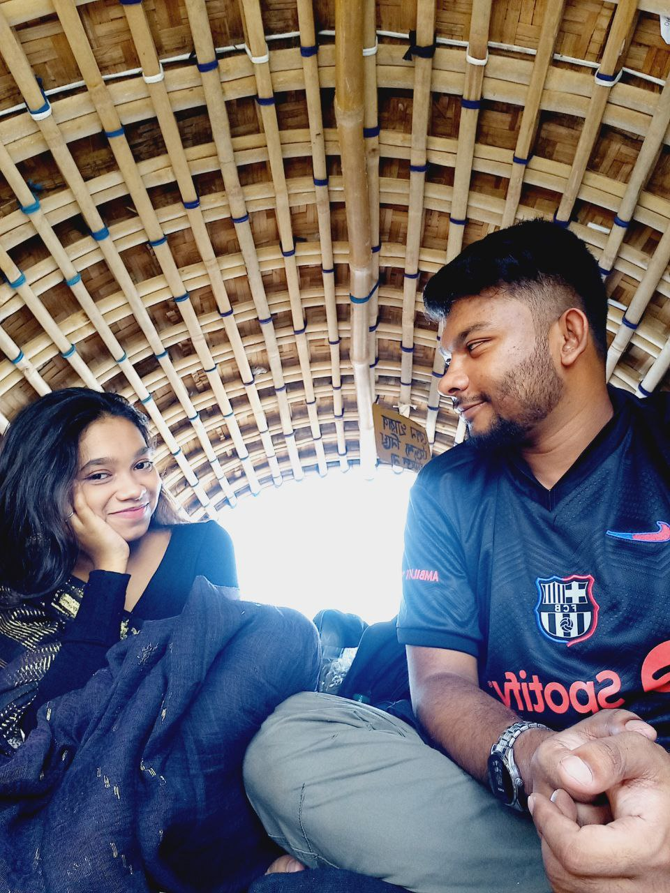
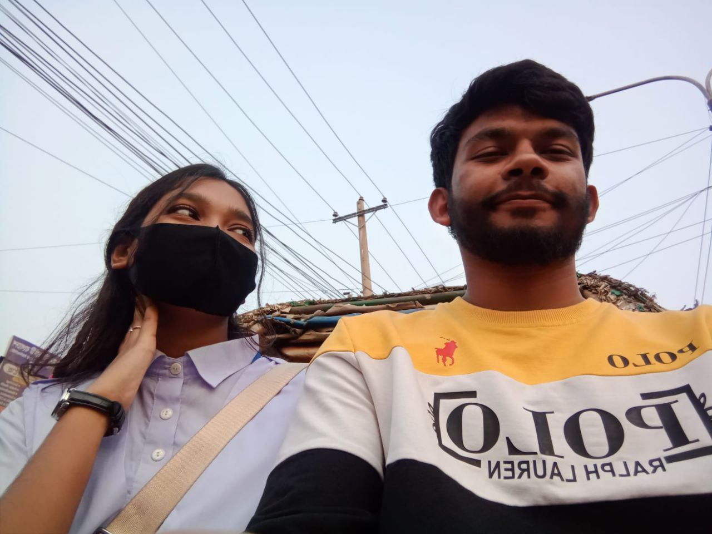
These photos are more than just memories; they’re windows into the love I’ve lived with her. Each time I look at them, I’m reminded of why I fell so deeply in love with her. The sparkle in her eyes, the warmth in her smile, and the beauty that captivated me from the start. These moments reflect her grace, her kindness, and how she brightens my world. She’s timeless, and I’ll always cherish how beautiful she is, inside and out.
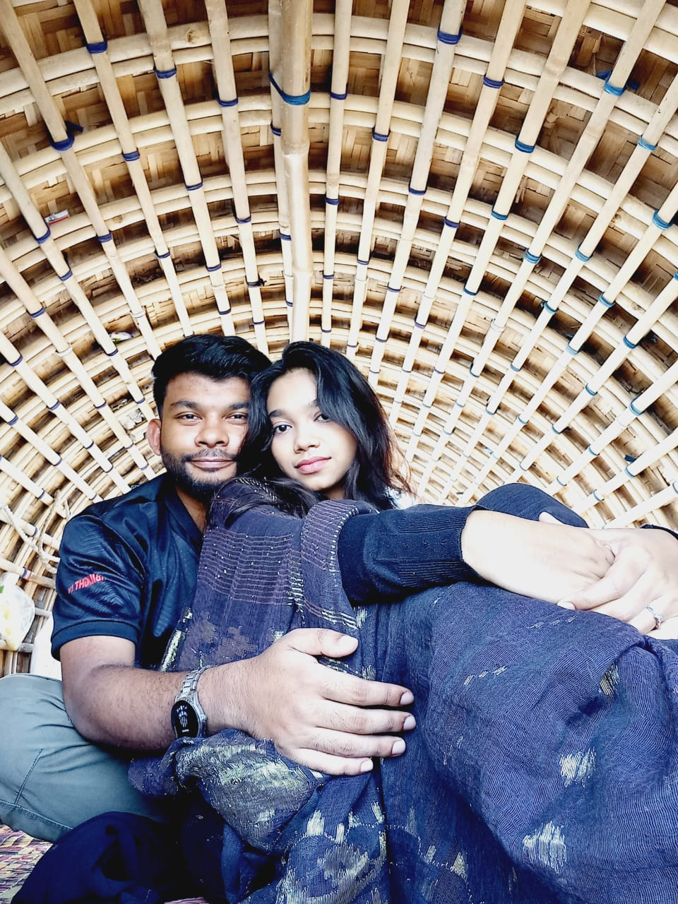
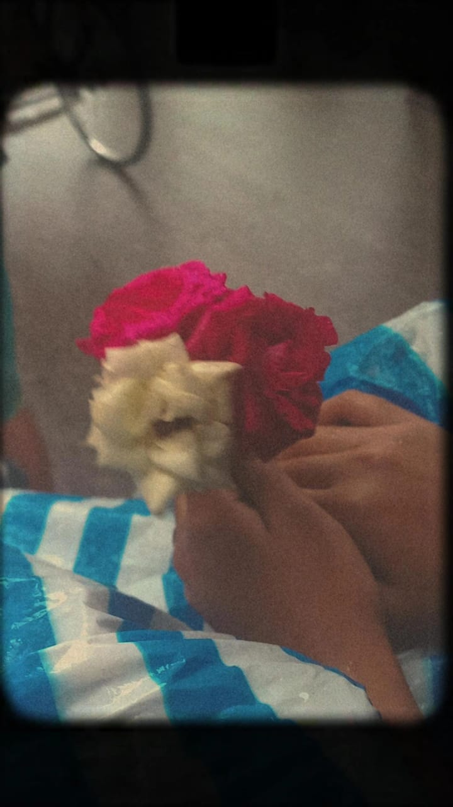
These are the ones that hold the memories of our laughter, our quiet glances, and the simple, beautiful moments that make up our love story. From candid smiles to those quiet, intimate shots where we’re just being ourselves, each photo tells a story. It’s not just about the picture, but about the emotions we relive every time we look at them.
These are the ones that hold the memories of our laughter, our quiet glances, and the simple, beautiful moments that make up our love story. From candid smiles to those quiet, intimate shots where we’re just being ourselves, each photo tells a story. It’s not just about the picture, but about the emotions we relive every time we look at them.
Hamdan: "We share the same butterflies, Afsu. Every time I’m with you, it’s like falling in love all over again."
Afsu: "Every moment with you is my favorite moment."